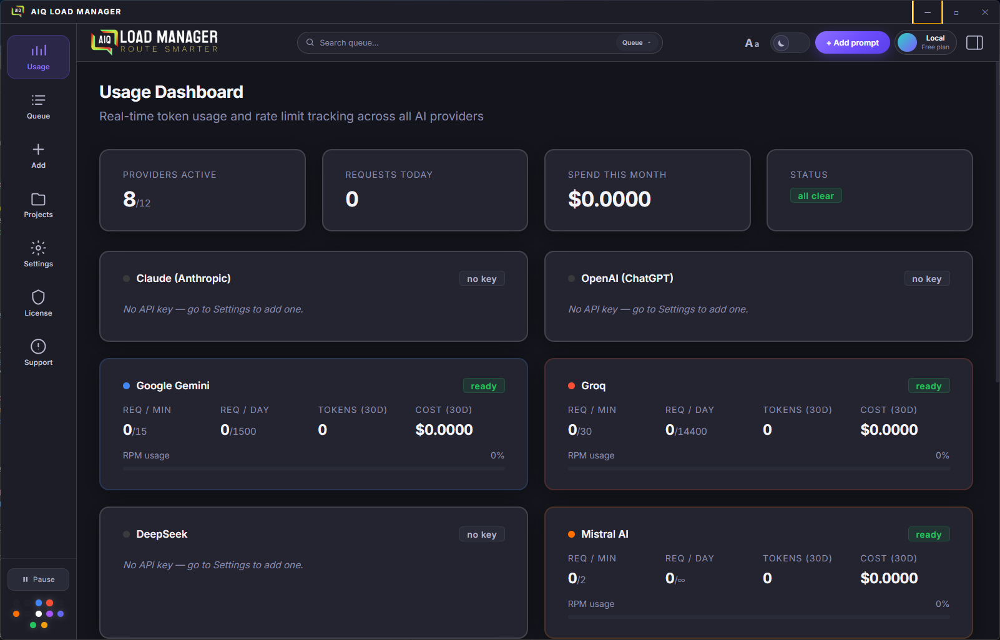
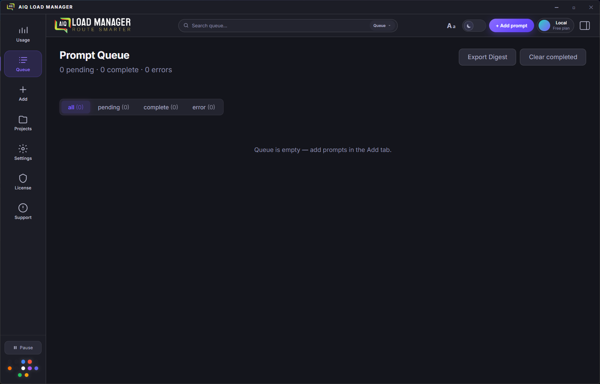
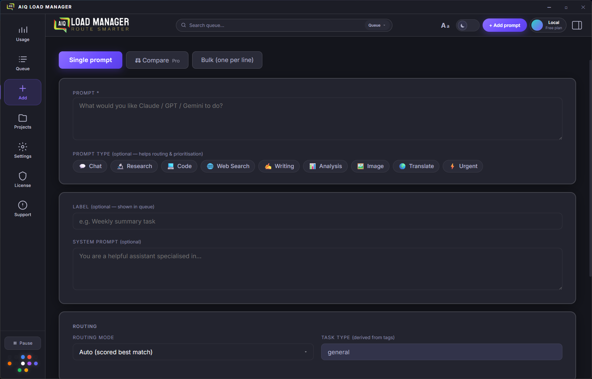
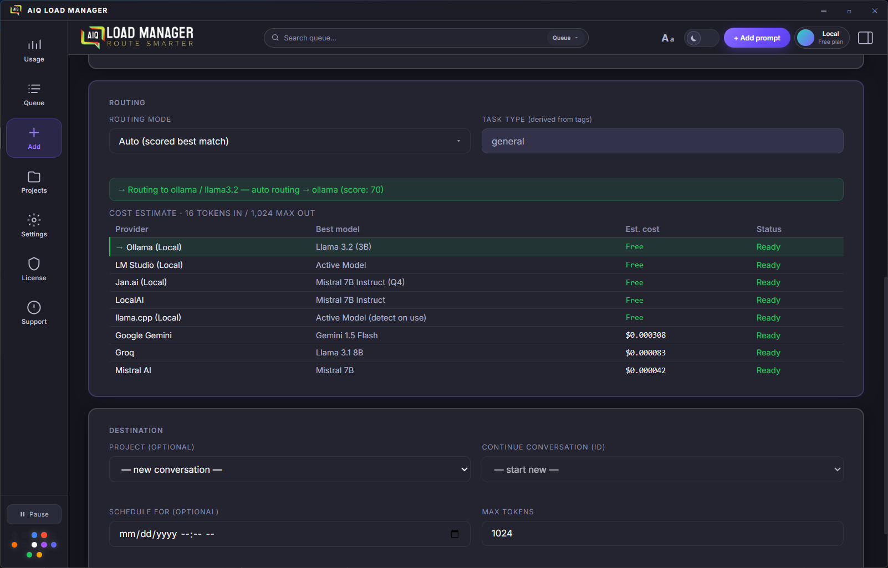
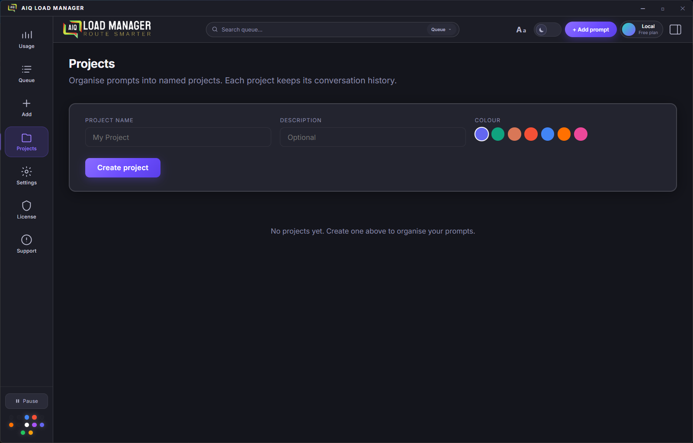
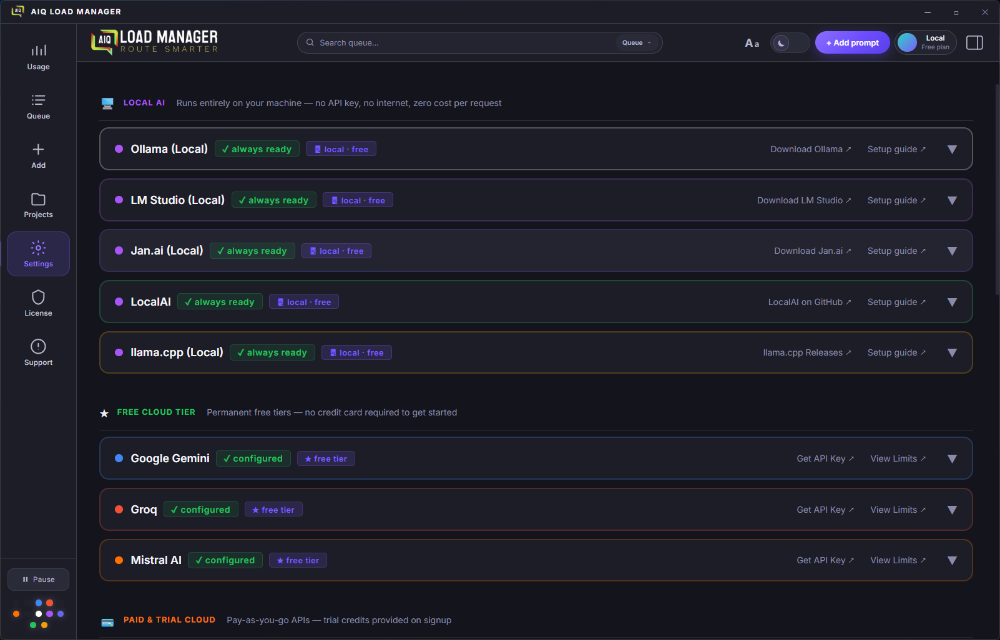

AIQ Load Manager is not a chat app. It's a background queue engine — fire off prompts and get on with your work.
Prompts queue instantly and process in the background every 1.5–3 seconds. Rate limits are tracked in real time — nothing gets dropped or rejected.

Auto, Balance, Cheapest, Fastest, Free Tier, and Manual modes direct each prompt to the right provider automatically. No manual switching.

See exactly how many tokens and dollars you've spent per provider, per model, over any time period. Set budget caps to avoid surprises.
Organize prompts into separate projects, each with its own conversation thread. History is written to local SQLite on every turn — conversations survive app restarts exactly where you left off.
Label each prompt with visual chip tags — Chat, Research, Code, Writing, Analysis, Image, Translate, or ⚡ Urgent. Tags drive provider selection automatically and, on Pro, lift your prompt's place in the queue. The special 🌐 Web Search tag also triggers live result injection before the AI call.
See a live token count as you type and a ranked per-provider cost table before you hit queue. Know exactly what each prompt will cost on Claude vs. Groq vs. Gemini — before you send it.

Send the same prompt to multiple providers simultaneously. Responses arrive in parallel and display as side-by-side columns — provider name, model, full text, copy button, token count. Instantly see whether Claude, GPT-4o, or Gemini does better on your task.

Tag any prompt 🌐 Web Search and AIQ fetches live results before sending — then injects them into the system prompt. Works with every model, including fully local ones. No tool-calling support needed. Choose Tavily (1,000 free searches/month) or self-hosted SearXNG.
Network glitch? Temporary server error? The queue retries the prompt automatically — up to 3 times — without you lifting a finger. Permanent failures (wrong API key, spend blocked) surface immediately so you can act on them.
Set a global system prompt once in Settings and it's automatically prepended to every prompt you queue, across every provider. Define your preferred tone, language, output format, or any baseline rules — your own AI rulebook that travels with every request.
Per-provider tone and format controls — choose from Concise, Caveman (ultra-simple words), Bullet-only, ELI5, or write a fully custom instruction. Style text is appended to every prompt sent to that provider. Available on all plans.
A dedicated tab that shows every completed response as a full-text card — no expanding rows, no hunting through the queue. Search across prompts and responses, filter by project or provider, and copy any response with one click. A green badge on the nav icon counts how many results are waiting.
Every completed prompt for a project is stored and browseable. Click View history on any project card to see the full log of prompts, responses, provider/model used, and token counts. Available on all plans.
Export your completed queue as a self-contained HTML file — dark theme, summary stats (items, tokens, cost), and collapsible prompt/response sections for each item. One click opens a native save dialog; the file opens immediately after saving. Starter and above.
Set a preferred model for any cloud provider so every unspecified queue item uses it automatically. Per-item model selection always overrides the default — this just sets your personal preference. Pro+ and above.
A Report a Bug button lives in the sidebar. One click opens a pre-filled GitHub issue with your app version and OS already populated — no copy-pasting, no hunting for version numbers.
Your prompts go directly to the AI provider — nothing passes through our servers. API keys are stored in your OS keychain. Anonymous usage analytics are collected to improve the app (no prompts, no keys, no personal data) — opt out any time in Settings.
Built with Electron and React. Runs natively on Windows 10/11 and macOS. Installs as a proper desktop app — no browser tab to lose.

Running agents through Hermes, n8n, or CrewAI? Point them at AIQ's local endpoint and they inherit AIQ's full routing, rate-limit queuing, cost tracking, and automatic provider fallback — without changing a line of agent code.
Change one line in your agent framework — set
base_url to http://localhost:8787/v1. No
code changes, no new packages, no API rewrites. Every framework
that speaks the OpenAI API works instantly.
Long-running n8n workflows and multi-agent Hermes runs generate bursts of LLM calls that hit rate limits and fail silently. AIQ queues every call, waits for headroom, and retries automatically — your workflow never drops a request at 2 am.
Pass aiq/auto, aiq/cheapest,
aiq/fastest, or aiq/free as the model
name and AIQ's routing engine picks the best provider. Or pass any
real model name to pin a specific provider — your choice per call.
Every token your agents spend — Hermes, n8n, CrewAI, all of them — shows up in AIQ's Usage Dashboard. See real costs per provider, per project, and per session without adding observability tooling to each framework.
If your primary provider goes down mid-run, AIQ's router falls back to the next available provider automatically. Your agent keeps running. The switchover is invisible — the response comes back in the same format.
The gateway runs on your machine. No data goes to our servers — agent requests go from your framework, through AIQ, directly to the AI provider. Optional per-project API key prevents other local processes from using the endpoint without permission.
Compatible frameworks — change one config line
base_url: http://localhost:8787/v1
OpenAI credential → Base URL field
Provider config → base URL
ChatOpenAI(base_url=...)
OPENAI_API_BASE in .env
OAI_CONFIG_LIST base_url
Streaming (stream: true) fully supported. Available on
all plans — free and paid. Ships in v0.6.0.
The queue concept translates naturally to mobile. Here's exactly what you'd get on each platform — and one honest caveat.
Full background queue processing, all routing modes, unlimited queue depth (Pro), local SQLite storage, OS keychain for API keys. The complete experience.
Full desktop app via AppImage (runs on any distro — no installation, no root required) and .deb for Debian/Ubuntu. The same complete experience as Windows and macOS. The build config is already in place.
The companion app. Monitor your queue, add prompts on the go, view completed results, and receive push notifications. Mobile doesn't replace desktop — it extends it.
Informed by competitor research and user workflows — the gaps no other tool covers.
The full desktop app on Linux — AppImage format runs on any distro
without installation or root access, plus a .deb package for
Debian and Ubuntu users. The electron-builder config
is already in place. Needs a round of testing on a Linux CI runner
before public release. All features parity with Windows and macOS.
When the router re-routes a conversation to a different provider mid-thread — because of rate limits, cost, or availability — the stored history is automatically adapted to the new provider's format and forwarded. Your conversation keeps going, invisibly. No other tool can do this, because no other tool routes across providers in the first place.
A tier above Pro for power users who need the full stack: Consensus mode, advanced prompt chaining, webhook output delivery, and priority support. Designed for teams and high-volume workflows. Details and pricing TBD.
Compare mode already collects every provider's response in one place. Consensus mode goes further: a meta-model synthesises the best answer from all of them, flags where providers disagree, or runs a majority-vote across outputs. One click from Compare — no separate queue, no extra setup.
Save reusable prompt templates with named variables. Fill in the blanks and queue — no copy-paste gymnastics.
Use the output of one queue item as the input to the next. Build multi-step AI pipelines without writing code.
Upload a CSV of prompts and queue them all at once. Ideal for bulk content generation, testing, or data processing workflows.
Define cost and model threshold rules that override the automatic routing decision — for example: "never use Claude if estimated cost exceeds $0.02" or "always route Code prompts to GPT-4o". Builds on top of the existing 6 routing modes without replacing them.
Export raw usage data — token counts, costs, timestamps, provider and model — as CSV on Starter or CSV + JSON on Pro and above. Distinct from the session digest HTML export, which is a formatted report. Useful for importing into spreadsheets or external analytics tools.
Queue image prompts to DALL-E 3, Flux, Ideogram, and Stable Diffusion (locally via ComfyUI — free). Each image is a queue item. Batch-generate dozens while you work on something else. Results auto-save to a folder you choose. Same routing and cost-tracking model you already know.
The queue model is tailor-made for video AI. Runway, Pika, and Kling take 2–10 minutes per clip and cost real money — exactly when a managed queue with per-job cost tracking earns its keep. Submit a batch, walk away, come back to finished clips ready to download.
POST completed responses to any URL the moment they're ready. Connect AIQ to Zapier, Make, or your own backend without polling.
Run any model locally via Ollama, LM Studio, Jan.ai, LocalAI, or llama.cpp. Zero API cost, complete privacy, fully offline. Models are discovered automatically — Llama, Mistral, Phi, Gemma, Qwen, DeepSeek-R1 and more. All server ports are configurable.
All 7 use the existing OpenAI SDK — no new npm packages needed.
Phase 1 · v0.6.0 — Fireworks AI (fastest inference, Llama/DeepSeek/Qwen) · Together AI (200+ open-source models, $25 free credit) · Cerebras (wafer-scale speed, ~1,800 tok/s, free tier) · MiniMax (MiniMax M3 — GPT-4o quality at $0.60/M input) · Cohere (enterprise instruction-following, trial key)
Phase 2 · v0.7.0 — Perplexity AI (search-grounded responses with live web citations embedded in every reply)
Phase 3 · v0.8.0 — OpenAI Codex (dedicated coding agent; reuses your existing OpenAI key — zero extra setup)
Pro+ removes the 500-item queue soft cap entirely, raises cloud limits to 10,000 prompts and 20M tokens per month, adds Consensus mode (meta-model synthesis across Compare results), and includes priority email support. Built for solo power users who outgrow Pro without needing team features.
Attach local files — PDF, DOCX, TXT — as persistent context for a project. The file content is injected into the system prompt for every prompt in that project. Nothing leaves your machine: files are read locally and never uploaded to any server.
Schedule automated email digests of your completed session activity — daily or weekly. Free and Starter users can already export session digests as local HTML files; Pro+ adds email delivery so you receive a formatted summary without opening the app.
Predict your monthly AI spend based on current usage trends. Get warned before you blow a budget, not after.
Queue prompts from your phone, receive push notifications on completion, monitor live costs. Included with Starter and Pro at no extra charge.
A week/month grid that shows all your upcoming scheduled queue items as visual blocks — click any item to preview, edit, or cancel it, and drag to reschedule. Pairs with the usage heatmap below to give you a unified past/forward view of everything in your queue, laid out on a timeline instead of a flat list.
A new Insights sidebar panel powered entirely by your existing local SQLite data — no new infrastructure needed. Shows time-series charts of prompts/day, cost/day, and tokens/day; provider and model distribution; tag-type breakdown; and a busiest-hours heatmap so you can see exactly when and how you're using each provider.
A GitHub-style contribution graph showing prompt volume and cost by day over the last 90 days. Lives inside the Insights panel alongside the scheduled-items calendar, giving you one place to see your full AI usage history at a glance — dark squares mean high-activity days, colours shift from tokens to cost.
Pattern observations that surface concrete routing efficiency suggestions based on your actual usage history — for example: "You route 90% of Research prompts to Claude, but Gemini costs 4× less for that tag type." Runs entirely against local SQLite data; no prompt content is analysed externally or sent anywhere.
A local model (Ollama or LM Studio) reviews your prompt patterns and suggests rewrites and routing changes that cut cost or improve output quality. Requires a local provider to be configured. Because analysis runs on your own hardware, no prompt content ever leaves the machine — the optimization is completely private.
AIQ spins up a local HTTP server (localhost:8787)
that speaks the standard OpenAI Chat Completions API. Any AI agent
framework — Hermes, OpenClaw, n8n, LangGraph, CrewAI, AutoGen,
OpenAI Agents SDK — can point its
base_url at AIQ and instantly inherit AIQ's full
routing, rate-limit management, cost tracking, and provider
fallback. No code changes on the agent side. Pass
aiq/auto, aiq/cheapest, or
aiq/fastest as the model name to invoke routing
modes, or pass any real model name to force a specific provider.
Streaming (stream: true) is fully supported. A new
Gateway panel shows server status and a live request log.
Also ships with OpenRouter as a new provider — 500+ models through a single API key, using the same OpenAI-compatible SDK already in the app.
Replaces binary UP / DOWN status with a rolling
composite score per provider: latency (p50 & p95), error
rate %, token throughput (tokens/sec), and RPM headroom. Each
provider card in the Usage Dashboard shows a live gauge. The
router uses the score for weighted decisions in
auto mode — so a fast-but-unreliable provider scores
lower than a slightly slower but rock-solid one.
Tokens/sec and average response time displayed per provider in the
Usage Dashboard — no new backend needed, derived from existing
queue completion events. Cerebras and Groq are the showcase:
seeing "Cerebras ~1,800 tok/s vs.
GPT-4o ~45 tok/s" live makes the
fastest routing mode instantly tangible.
Scope a monthly USD budget to a project rather than to a single provider. The cap spans all providers the project uses, so "this client gets $50/month of AI" works regardless of which provider processes each item. Pairs with cost tracking and usage export for a complete per-project cost picture.
A live cost/quality scoring engine that extends the existing
cheapest mode and custom routing rules. Define
thresholds like "max $0.03/request" or "never use Claude for Chat
prompts" and the router enforces them at dispatch time,
dynamically selecting the cheapest provider that meets all active
rules. The cost table updates live as provider pricing changes —
few competitors do this well.
Define per-project SLA rules — maximum latency, maximum cost per request, minimum reliability score. When the winning provider fails an SLA check, the router falls back to the next-best provider automatically, with no user intervention. Rules are stored locally per project. This is the "Cloudflare for AI inference" differentiator — no other desktop tool enforces SLAs across providers.
An append-only local log of every routing decision: which item went where, which routing mode fired, which rule matched, and what it cost. Stored in SQLite alongside existing usage data — no new infrastructure. Gives governance-conscious users full accountability and is the foundation for a compliance reporting tier later.
Assign a cost-center label — client, department, or team — to any project. Usage exports include the cost-center field so you can generate per-client or per-department spend reports in your own spreadsheet or BI tool. Enables chargeback billing for MSPs and freelancers without requiring a full billing engine.
Route agentic task payloads — OpenAI Agents, LangGraph, CrewAI, MCP tool calls — through the queue the same way text prompts are routed today. The queue model already handles async workloads with retry, cost tracking, and provider fallback; this extends it to multi-step agent runs. An emerging market with very few tools doing it well.
Start free. Upgrade when you need more. No usage meters on top of your API costs.
Monthly cloud prompt and token limits are AIQ-side caps — they protect the service while keeping costs predictable for you. No usage surcharges are added on top of your API costs. You pay your providers directly at their published rates.
| Free | Starter | Pro | Pro+ Soon | Team Soon | |
|---|---|---|---|---|---|
| Pricing | |||||
| Monthly priceAll plans are monthly subscriptions — cancel any time | $0 | $9 / mo | $19 / mo | $34 / mo | $49 / user / mo |
| AI Providers | |||||
| AI providers (total)5 local + 3 free cloud + 4 paid cloud = 12 | 5 | 8 | All 12 | All 12 | All 12 |
| Local AI (Ollama, LM Studio, Jan.ai, LocalAI, llama.cpp)No API key · $0 per request · fully offline | ✓ | ✓ | ✓ | ✓ | ✓ |
| Free cloud tier (Gemini, Groq, Mistral)Permanent free access — no credit card required | – | ✓ | ✓ | ✓ | ✓ |
| Paid cloud (Claude, OpenAI, DeepSeek, xAI Grok) | – | – | ✓ | ✓ | ✓ |
| Monthly Cloud Limits (AIQ-side caps — not provider API limits) | |||||
| Monthly cloud prompt runsDirect API calls to cloud providers via AIQ | – | 500/mo | 2,500/mo | 10,000/mo | 25,000/mo (pooled) |
| Monthly cloud tokensCumulative tokens processed through cloud providers | – | 1M/mo | 5M/mo | 20M/mo | 60M/mo (pooled) |
| Media Generation | |||||
| Image generationDALL-E 3, Flux, Ideogram, Stable Diffusion (local) — Roadmap | – | ✓ | ✓ | ✓ | ✓ |
| Video generationRunway, Pika, Kling — Roadmap | – | – | ✓ | ✓ | ✓ |
| Auto-save media output to folderRoadmap — ships with image generation | – | ✓ | ✓ | ✓ | ✓ |
| Queue | |||||
| Max queue depth | 10 items | 100 items | 500 (soft cap) | Unlimited | Unlimited |
| Background queue processing | ✓ | ✓ | ✓ | ✓ | ✓ |
| Agent Gateway — local OpenAI-compatible serverPoint Hermes, n8n, OpenClaw, LangGraph, CrewAI, AutoGen at AIQ — ships v0.6.0 | v0.6.0 | v0.6.0 | v0.6.0 | v0.6.0 | v0.6.0 |
| Real-time rate limit tracking | ✓ | ✓ | ✓ | ✓ | ✓ |
| ⚡ Urgent tag — priority boostJump the queue on any plan | ✓ | ✓ | ✓ | ✓ | ✓ |
| Tag-based smart priorityAll 9 tag types boost queue position | – | – | ✓ | ✓ | ✓ |
| Batch CSV importRoadmap — Starter and above | – | ✓ | ✓ | ✓ | ✓ |
| Scheduled-items calendar viewWeek/month grid of upcoming queue items — Roadmap | – | ✓ | ✓ | ✓ | ✓ |
| Routing Modes | |||||
| Manual routing | ✓ | ✓ | ✓ | ✓ | ✓ |
| Free Tier routingPrefers local providers first, then Gemini, Groq, Mistral | ✓ | ✓ | ✓ | ✓ | ✓ |
| Auto routingScores all providers dynamically | – | ✓ | ✓ | ✓ | ✓ |
| Balance routingRound-robins across providers | – | ✓ | ✓ | ✓ | ✓ |
| Cheapest routingLowest cost per token, real-time | – | – | ✓ | ✓ | ✓ |
| Fastest routingPrefers lowest-latency providers | – | – | ✓ | ✓ | ✓ |
| Custom routing rulesCost thresholds, model overrides — Roadmap | – | – | ✓ | ✓ | ✓ |
| Cost & Analytics | |||||
| Basic usage dashboardToken counts, request counts | ✓ | ✓ | ✓ | ✓ | ✓ |
| Budget spend visibilitySee estimated spend per provider | View-only | View-only | ✓ | ✓ | ✓ |
| Cost tracking per provider & model | – | ✓ | ✓ | ✓ | ✓ |
| Budget caps & overage alerts | – | – | ✓ | ✓ | ✓ |
| Cost forecastingRoadmap | – | – | ✓ | ✓ | ✓ |
| Usage history exportCSV (Starter) · CSV + JSON (Pro+) — Roadmap | – | ✓ | ✓ | ✓ | ✓ |
| Usage Insights panelTime-series charts, provider distribution, tag breakdown, heatmap — Roadmap | – | – | ✓ | ✓ | ✓ |
| Usage heatmap calendarGitHub-style 90-day prompt volume & cost graph — Roadmap | – | – | ✓ | ✓ | ✓ |
| Prompt habit analysisRouting efficiency suggestions from local usage data — Roadmap | – | – | – | ✓ | ✓ |
| Results panelDedicated tab — full response text, search, filter by project or provider, one-click copy, green unread badge | ✓ | ✓ | ✓ | ✓ | ✓ |
Each tool solves a different slice of the problem. AIQ is the only one that combines a desktop queue, intelligent routing, cost tracking, and an agent gateway in a single local app you own.
| Capability | ✦ AIQ Load Manager | LiteLLM | OpenRouter | Hermes Agent | n8n (built-in) |
|---|---|---|---|---|---|
| Desktop GUI — no terminal required | ✓ Native app | CLI / config file | Web UI only | Terminal / config | Browser UI |
| All data stays local — no cloud sync | ✓ 100% local | ✓ Self-hosted | Cloud-hosted proxy | ✓ Self-hosted | Cloud or self-host |
| Background queue with priority ordering | ✓ Full queue engine | No queue UI | No queue | No queue | Workflow-level only |
| Rate-limit awareness + auto wait-and-resume | ✓ Per-provider RPM/TPM | ✓ Router-level | ✓ Provider-level | Errors on 429 | Fails on 429 |
| Agent Gateway — OpenAI-compatible local endpoint | ✓ v0.6.0 | ✓ Proxy server | Cloud endpoint only | Consumer only | Consumer only |
| Live cost tracking per provider + model | ✓ Real-time dashboard | Logs only | Usage page | None | None |
| Pre-send cost estimate before queuing | ✓ Live as you type | — | — | — | — |
| Routing modes (auto / cheapest / fastest / free tier) | ✓ 6 modes | ✓ Router strategies | ✓ Provider routing | Single-provider focus | Manual per node |
| Local AI (Ollama, LM Studio, llama.cpp, etc.) | ✓ 5 local providers | ✓ Ollama + others | Cloud only | ✓ Via Ollama | ✓ Via Ollama |
| Compare mode — same prompt to multiple providers | ✓ Side-by-side | — | — | — | — |
| Per-project budget caps & alerts | ✓ Pro | ✓ Config-level | ✓ Org-level | — | — |
| Pricing | Free forever $9 / mo Starter $19 / mo Pro | Free OSS · $49/mo cloud | Free + usage fees | Free OSS | Free OSS · $20/mo cloud |
LiteLLM is a great choice if you want a self-hosted proxy server with deep observability tooling. OpenRouter is ideal if you want a single cloud endpoint across hundreds of models. AIQ does both jobs locally — plus adds the queue UI, cost dashboard, and agent gateway that neither offers out of the box.
No. AIQ is a background queue engine — you fire off prompts and get on with your work while they process. It's built for people who send a lot of AI requests and need them managed, routed, and tracked, not for having a single conversation. If you want a chat interface, use Claude.ai or ChatGPT. AIQ is what sits behind your workflow.
The Agent Gateway (shipping v0.6.0) is a local HTTP server that AIQ runs on your machine at localhost:8787. It speaks the standard OpenAI Chat Completions API, so any agent framework — Hermes, n8n, CrewAI, LangGraph, AutoGen — can point its base_url at AIQ and immediately get rate-limit queuing, cost tracking, smart routing, and automatic provider fallback. One config change in your framework, nothing else to set up.
No. Every API call goes directly from your machine to the AI provider — Claude, OpenAI, Gemini, Groq, or whichever you've configured. AIQ is local software. We never see your prompts, your responses, or your API keys. The only data that leaves your machine is anonymous usage analytics (opt-out available in Settings), and your payment details which are handled entirely by Lemon Squeezy.
OpenRouter is a cloud-hosted proxy that gives you access to hundreds of models through one endpoint — great for model breadth. AIQ runs locally, owns your queue, tracks your costs in real time, and provides a desktop UI. Starting in v0.6.0, AIQ also exposes its own OpenAI-compatible endpoint so you can use OpenRouter as a provider inside AIQ — getting both OpenRouter's model catalogue and AIQ's queue management together.
The Agent Gateway is available on all plans — including Free. There are no per-request fees beyond what your AI providers charge you directly. The gateway ships in v0.6.0 (August 2026).
Not for the core app. If you're using AIQ to queue and route prompts yourself, it's a standard desktop app — download, install, paste in your API keys, and go. The Agent Gateway does require changing one config line in your agent framework, so basic familiarity with tools like n8n or LangGraph helps there.
The queue retries the item automatically up to 3 times on transient errors (network timeouts, 5xx errors). If the provider is still unavailable, the item settles into an error state where you can retry manually with one click. Through the Agent Gateway, the router falls back to the next available provider automatically so your agent keeps running without seeing the switchover.
Those frameworks handle agent logic — planning, tool use, multi-step reasoning. What they don't manage is the underlying LLM traffic: rate limits, cost tracking across providers, smart routing based on cost or speed, and automatic fallback when a provider is down. AIQ handles that layer so your agents don't have to. One config line change and every LLM call your agent makes goes through AIQ's queue.
Yes. Local providers are first-class in AIQ and the gateway routes to them the same as any cloud provider. Pass aiq/free as the model name and AIQ prefers local providers first — fully offline, no API costs. Pass aiq/auto and the router weights local providers heavily because their cost is $0.
Yes — free forever, no credit card required. The Free plan includes 5 local AI providers (Ollama, LM Studio, Jan.ai, LocalAI, llama.cpp), manual and free-tier routing, a 10-item queue, and the Agent Gateway when it ships. Starter ($9/mo) adds the 3 permanent free cloud tiers (Gemini, Groq, Mistral). Pro ($19/mo) unlocks all 12 providers and the full routing engine.
Download free and start routing prompts in under five minutes. No credit card required.
Get Started — It's Free